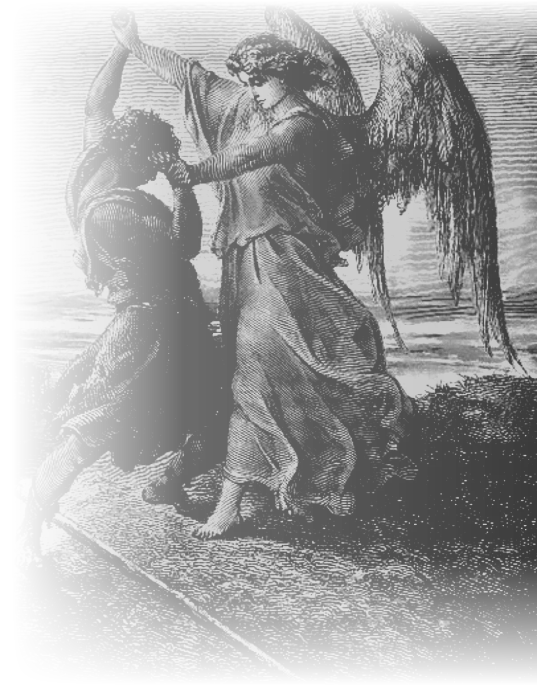

MANIFIESTO / 001
UNO CONTRATODOS.
Antes de enfrentarte al mundo,
tendrás que enfrentarte a ti mismo.
CUATRO ACTOS.
NO TODO ES VICTORIA.
Ser humano
no es ser invencible.
Somos también lo que tememos. Lo que no comprendemos. Las decisiones que aplazamos. El peso que sostenemos sin saber por qué.
Esta obra recurre a mitos, grabados e historias antiguas para explorar preguntas que todavía nos pertenecen. No propone una fortaleza sin fisuras. Propone mirar con más atención.
¿Y si la primera cosa
que debemos cuestionar
es nuestro propio reflejo?
UNA PREGUNTA QUE NO SE RESPONDE AQUÍ.
UN RECORRIDO SIN RESPUESTAS FÁCILES
Lo que aún
no comprendemos.
Cuatro umbrales. Ninguna historia revelada antes de tiempo. Entra primero en la pregunta; descubre después quién la habitó.
Cuatro actos, cuatro preguntas

LO QUE CREEMOS SER.
Hay reflejos que terminan pareciéndose a una prisión.
¿Cuánto de tu identidad te pertenece? ¿Qué queda cuando la imagen en la que confiabas ya no puede sostenerte?

LO QUE NOS SUPERA.
El tamaño del miedo no siempre revela su verdadera fuerza.
Algunas luchas terminan en victoria. Otras se repiten sin ofrecer ninguna. ¿Qué significa actuar cuando el resultado no nos pertenece?

LO QUE NOS GOBIERNA.
No toda altura es libertad. No todo peso es responsabilidad.
La voluntad puede impulsarnos o cegarnos. El deber puede sostenernos o someternos. ¿En qué momento la fuerza necesita límites?

LO QUE ELEGIMOS DEFENDER.
Hay enfrentamientos que no cambian el mundo. Cambian a quien regresa.
¿Qué precio tiene una convicción? ¿Y qué ocurre cuando el encuentro con lo desconocido transforma nuestra manera de nombrarnos?
ESTA HOME PRESENTA LAS PREGUNTAS DE LOS ACTOS SIN REVELAR LOS RELATOS.
No todo lo que pesa
debe cargarse.
No todo lo que termina
es una derrota.